XRDkin
The XRDkin class simulates kinematic X-ray diffraction on a 1D structure.
Copyright (c) 2013, Daniel Schick, André Bojahr, Marc Herzog, Roman Shayduk, Clemens von Korff Schmising All rights reserved.
License: BSD (use/copy/change/redistribute on own risk, mention the authors)
Contents
Classdef
Each XRDkin instance and all inherited class objects are inherted from the XRD class which follows handle semantics. Hence a copy of such object will not copy the object itself, but only a handle to that object.
classdef XRDkin < XRD
Properties
properties (SetAccess=public,GetAccess=public)
% empty
end%properties
Methods
methods
Constructor
Is executed each time an instance of this class is created. Only the structure input is obligatory.
function obj = XRDkin(structure,varargin) obj = obj@XRD(structure,varargin{:}); end%functions
Display
This method is called to display informations of the instance.
function disp(obj) disp('Kinematical X-Ray Diffraction simulation properties:'); % call the parent display method disp@XRD(obj); end%function
getUCAtomicFormFactors
Returns the energy- and angle-dependent atomic form factors 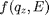 of all atoms in the unit cell as a vector.
function f = getUCAtomicFormFactors(obj,qz,UC) f = zeros(UC.numAtoms,length(qz)); for j = 1:UC.numAtoms f(j,:) = UC.atoms{j,1}.getCMAtomicFormFactor(obj.E,qz); end end%function
getUCStructureFactor
Returns the energy-, angle-, and strain-dependent structure factor 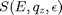 of the unit cell
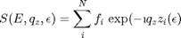
function S = getUCStructureFactor(obj,UC,strain) if nargin < 3 strain = 0; end S = sum(obj.getUCAtomicFormFactors(obj.qz,UC)... .* exp(1i * UC.cAxis * UC.getAtomPositions(strain) * obj.qz)); end%function
homogeneousReflectivity
Returns the reflectivity 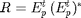 of a homogeneous sample structure as well as the reflected field 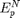 of all substructures.
function [R A] = homogeneousReflectivity(obj,strains) % if no strains are given we assume no strain (1) if nargin < 2 strains = zeros(obj.S.getNumberOfSubStructures(),1); end tic obj.dispMessage('Calculating _homogenousReflectivity_ ...'); % get the reflected field of the structure [Ept A]= obj.homogeneousReflectedField(obj.S,strains); % calculate the real reflectivity from Ef R = Ept.*conj(Ept); obj.dispMessage('Elapsed time for _homogenousReflectivity_:',toc); end%functions
homogeneousReflectedField
Calculates the reflected field 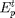 of the whole sample structure as well as for each sub structure (). The reflected wave field 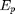 from a single layer of unit cells at the detector is calculated as follows:[Ref. 1]
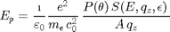
For the case of 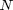 similar planes of unit cells one can write:
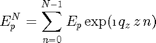
where 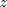 is the distance between the planes (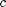-axis). The above equation can be simplified to
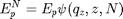
introducing the interference function
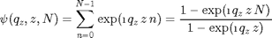
The total reflected wave field of all 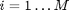 homogeneous layers () is the phase-correct summation of all individual 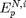:
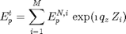
where 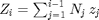 is the distance of the i-th layer from the surface.
function [Ept A] = homogeneousReflectedField(obj,S,strains) % if no strains are given we assume no strain (1) if nargin < 3 strains = zeros(S.getNumberOfSubStructures(),1); end % initialize K = length(obj.qz); % nb of qz Ept = zeros(1,K); % total reflected field Z = 0; % total length of the substructure from the surface A = cell(0,2); % cell matrix of reflected fields EpN of substructures strainCounter = 1; % the is the index of the strain vector if applied % traverse substructures for i = 1:size(S.substructures,1) if isa(S.substructures{i,1},'unitCell') % the substructure is an unit cell and we can calculate % Ep directly Ep = obj.getEp(S.substructures{i,1},strains(strainCounter)); z = S.substructures{i,1}.cAxis; strainCounter = strainCounter+1; else % the substructure is a structure, so we do a recursive % call of this method [Ep temp] = obj.homogeneousReflectedField(S.substructures{i,1}... ,strains(strainCounter:strainCounter+S.substructures{i,1}.getNumberOfSubStructures()-1)); z = S.substructures{i,1}.getLength; strainCounter = strainCounter+S.substructures{i,1}.getNumberOfSubStructures(); A(end+1,1:2) = {temp, [S.substructures{i,1}.name ' substructures']}; A(end+1,1:2) = {Ep, sprintf('%dx %s', 1, S.substructures{i,1}.name)}; end%if % calculate the interferece function for N repetitions of % the substructure with the length z psi = obj.getInterferenceFunction(z,S.substructures{i,2}); % calculate the reflected field for N repetitions of % the substructure with the length z EpN = Ep .* psi; % remember the result A(end+1,1:2) = {EpN, sprintf('%dx %s', S.substructures{i,2}, S.substructures{i,1}.name)}; % add the reflected field of the current substructre % phase-correct to the already calculated substructures Ept = Ept+(EpN.*exp(1i.*obj.qz*Z)); % update the total length $Z$ of the already calculated % substructures Z = Z + z*S.substructures{i,2}; end%for % add static substrate to kinXRD if ~isempty(S.substrate) [temp temp2] = obj.homogeneousReflectedField(S.substrate); A(end+1,1:2) = {temp2, 'static substrate'}; Ept = Ept+(temp.*exp(1i.*obj.qz*Z)); end%if end%function
getInterferenceFunction
Calculates the interferece function for repetitions of the structure with the length :
function psi = getInterferenceFunction(obj,z,N) psi = (1-exp(1i.*obj.qz.*z.*N)) ./ (1 - exp(1i.*obj.qz.*z)); end%function
getEp
Calculates the reflected field for one unit cell with a given strain 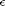:
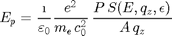
with 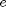 as electron charge, 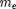 as electron mass, 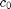 as vacuum light velocity,  as vacuum permittivity, 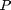 as polarization factor and 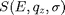 as energy-, angle-, and strain-dependent unit cell structure factor.
as vacuum permittivity, 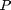 as polarization factor and 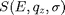 as energy-, angle-, and strain-dependent unit cell structure factor.
function Ep = getEp(obj,UC,strain) c = constants; Ep = 1i/c.eps_0*c.e_0^2/c.m_0/c.c_0^2*... (obj.getPolarizationFactor().*obj.getUCStructureFactor(UC,strain)... ./UC.area)./obj.qz; end%function
end%methods
end%classdef
References
- B. E. Warren (1990). X-ray diffraction (2nd). New York: Dover Publications